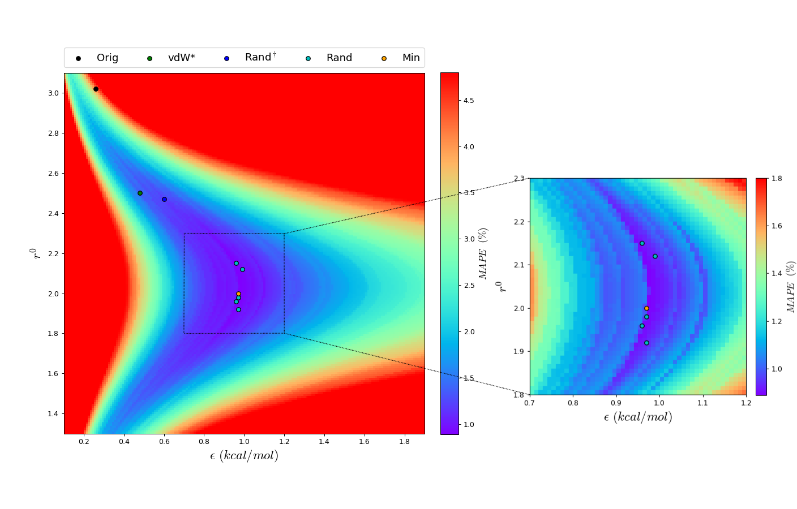

Membrane Dynamics:
While bacterial membranes are often thought of as passive barriers, they are in fact dynamic structures whose physical properties play a direct role in antibiotic resistance. One striking example is Staphylococcus aureus, which produces a golden-colored carotenoid pigment called staphyloxanthin. Known for its antioxidant properties—thanks to its extended system of conjugated double bonds—this molecule does more than neutralize free radicals. It also alters the biophysical properties of the bacterial membrane.
Our research focuses on understanding how staphyloxanthin affects membrane dynamics at the molecular level. Experimental studies have shown that its incorporation into the lipid bilayer increases membrane rigidity, making it more resistant to pore formation by antimicrobial peptides. This physical stiffening of the membrane can reduce the efficacy of many front-line antibiotics, providing S. aureus with a form of non-genetic resistance.
Using molecular dynamics simulations, we explored how staphyloxanthin (STX) interacts with model S. aureus membranes composed of DMPG or DPPG lipids, which differ in acyl chain length and thus membrane thickness. We observed that STX adopts distinct orientations depending on the membrane environment: in DMPG bilayers, STX tends to remain vertically aligned with the membrane normal, whereas in DPPG, it gradually shifts toward a more horizontal orientation over time. This behavior appears to be driven by hydrophobic mismatch between the carotenoid and the bilayer core. The accompanying figure shows both the time evolution and the distribution of STX’s tilt angle relative to the membrane normal in the two systems, revealing a broader and more horizontal orientation profile in DPPG compared to DMPG. These differences suggest that membrane composition strongly influences the dynamic positioning of STX within the bilayer.
In addition to orientation, we analyzed how STX affects local membrane biophysics. Compared to control simulations without STX, we find that the presence of STX alters the local membrane thickness and area per lipid in its immediate vicinity, indicating a restructuring of the surrounding lipid environment. These effects are more pronounced when STX adopts a vertical orientation, where it inserts more deeply into the bilayer. In this configuration, STX also leads to an increase in the lipid order parameter, suggesting that it locally stiffens the membrane by promoting more ordered acyl chain packing. Together, these observations highlight STX's role in reshaping membrane structure at the nanoscale, potentially contributing to the physical barrier properties that protect S. aureus from external stress.
Protein Dynamics:
Proteins are inherently dynamic molecules, constantly fluctuating between different conformations that are often essential to their function. These motions span a wide range of timescales, from rapid side-chain rotations to large-scale domain rearrangements, and they play critical roles in processes such as ligand binding, allosteric regulation, and molecular recognition. Traditional static structures, while informative, offer only a limited view of protein behavior. By contrast, molecular dynamics simulations allow us to capture the continuous motion of proteins in atomistic detail, revealing how flexibility and structural transitions contribute to biological activity. This dynamic perspective is especially important when studying protein–protein interactions, where subtle shifts in interface geometry and residue positioning can significantly influence binding strength and specificity.


Viruses exploit surface proteins to recognize and bind to receptors on host cells, initiating infection through highly specific protein–protein interactions. In coronaviruses, the spike glycoprotein mediates this process, with its receptor-binding domain (RBD) engaging the human ACE2 receptor. Although SARS-CoV and SARS-CoV-2 share a similar mode of entry, SARS-CoV-2 binds more tightly to ACE2, a difference that has been linked to its higher transmissibility. To understand the molecular origin of this enhanced affinity, we performed molecular dynamics simulations of both RBD–ACE2 complexes, focusing on how sequence variations at the interface influence the stability, dynamics, and binding free energy of the interaction.
To characterize the conformational landscape of the RBD–ACE2 complexes, we analyzed 3-microsecond molecular dynamics trajectories using a two-dimensional RMSD matrix that compares structural similarity between all pairs of frames. This map reveals the presence of distinct conformational states sampled during the simulation, indicating that the interface is not static but fluctuates between several binding modes. Based on this matrix, we performed clustering analysis and identified five dominant conformational clusters that represent the most frequently visited structural states. These representative structures not only capture the dynamic diversity of the complex but also served as starting points for further investigations in a collaborative study focused on enhanced sampling and drug screening.

To further dissect the molecular basis of binding affinity, we constructed interaction networks that map hydrophobic and hydrophilic contacts at the RBD–ACE2 interface for both SARS-CoV and SARS-CoV-2. These networks capture the frequency and persistence of residue-level interactions across the simulation trajectories. Our analysis revealed that SARS-CoV-2 forms a denser and more stable network of hydrogen bonds compared to SARS-CoV, with several key interactions occurring with significantly higher probability. These differences in contact patterns help explain the enhanced affinity of SARS-CoV-2 and are consistent with binding free energy calculations, which show that mutating SARS-CoV-2 interface residues to their SARS-CoV counterparts reduces binding strength. The correspondence between simulation-derived contacts and experimental mutational data has led to multiple citations, highlighting the predictive power of this approach in understanding viral adaptation.
Force Field Development:
Force field development is a critical aspect of computational biophysics, enabling the accurate simulation of molecular systems and the prediction of their behaviors. A force field consists of a set of mathematical functions and parameters that describe the interactions between atoms, including bond stretching, angle bending, torsional rotation, and nonbonded interactions such as van der Waals and electrostatic forces. The accuracy of these models depends on the careful parameterization against experimental data, quantum mechanical calculations, and high-level physical principles. As systems grow in complexity—such as in the case of large biomolecules or interactions with external molecules—force fields must be adapted and refined to accurately capture the subtle interplay of atomic forces. Whether for small molecules, proteins, or lipid membranes, force field development is an iterative process that seeks to balance computational efficiency with physical accuracy, ensuring reliable predictions for a wide range of biological phenomena.
Scientific Visualization:


Our ability to understand and control disease depends on our ability to
Blender addon:


Our ability to understand and control disease depends on our ability to
Models and Art:


Our ability to understand and control disease depends on our ability to


Data Fellow – MIT Biological Engineering Data Lab
(Spring 2020++)
Providing 1-on-1 coaching to undergraduates, graduate students, and postdocs at MIT for designing and executing projects in computational biology and biological data analysis. Offering language-specific training and support in Python, MATLAB, R, and cluster computing.
Peer counsellor – MIT Biological Engineering REFS
(Spring 2019++)
We provide 1-on-1 confidential conflict coaching, workshops, and reference material for navigating grad school to peer graduate students at the MIT Department of Biological Engineering. We identify points of stress in the Ph.D. track and work with the MIT BE Graduate Student Board to improve faculty mentorship and the graduate experience.
Teaching Assistant – MIT Biological Engineering
(Fall 2019)
Part of the teaching team for the introductory graduate course 20.420 - Principles of Molecular Bioengineering, taught by Profs. Ernest Fraenkel and Alan Jasanoff. Topics include reaction kinetics modeling, protein thermodynamics and computational prediction, and systems-level models of metabolism. Assisted with designing and grading assignments and exams, providing review lecture sessions, and providing one-on-one tutoring for 40 students in the Biological Engineering, Chemical Engineering, and Health Sciences and Technology graduate programs. Also conducted a programming bootcamp session, with materials available here.
Teaching Assistant – Uniandes Biomedical Engineering
(Spring, Fall 2016)
Part of the teaching team for the second-year undergraduate courses Quantitative Human Physiology I and II, taught by Prof. Juan M. Cordovez. Topics include human anatomy and systems physiology as well as mathematical modeling of physiological processes. Assisted with designing and grading assignments and exams, providing review lecture sessions, and providing one-on-one tutoring for 100 students in the Biomedical Engineering undergraduate program. Also taught two main lectures during professor absences.
Teaching Assistant – Uniandes Student Affairs
(Fall 2015)
Part of the teaching team for Social Practice, an undergraduate course and outreach program taught by instructors David Parga and María del Pilar Pérez. Assisted with training, guiding, and evaluating 60 Uniandes undergraduate students of all majors and years serving as academic tutors for low-income high school students in Bogotá, Colombia.
Teaching Assistant – Uniandes Biological Sciences
(Spring 2015)
Part of the teaching team for the Parasitology Laboratory course, a second year undergraduate course taught by Prof. Camila González and instructor Laura Tamayo. Topics included anatomy, physiology, and cell biology of diverse human and animal parasites and tropical diseases, from roundworms to viral fevers. Assisted by providing review sessions and tutoring, helping develop and grade assignments, and preparing demonstrative microscopy slides.
- hack my coding projects on GitHub
- view my published work on Google Scholar and ORCiD
- download my CV
- reach out to julian-melendez@hotmail.com